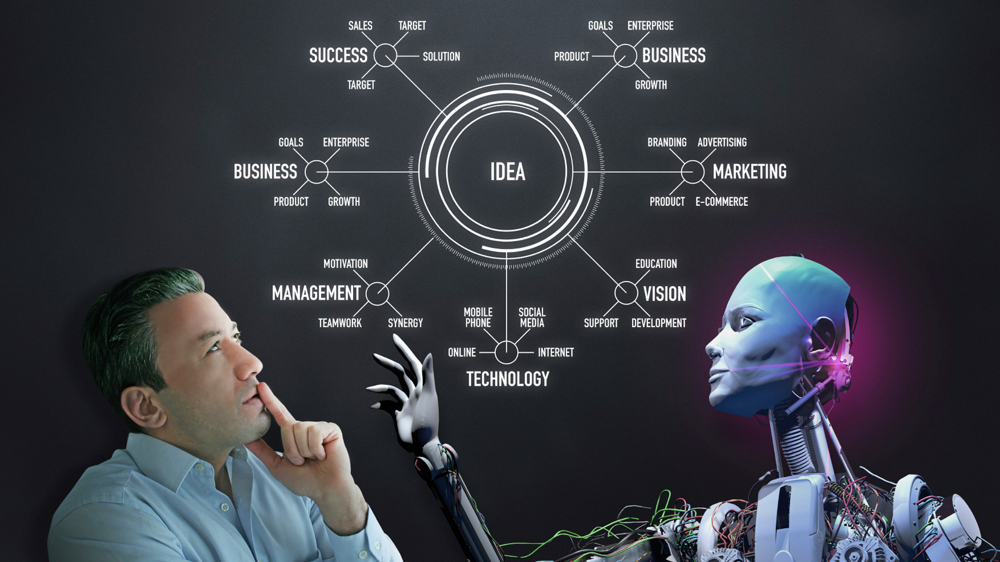

What was once just a figment of the imagination of some our most famous science fiction writers, artificial intelligence (AI) is taking root in our everyday lives. We're still a few years away from having robots at our beck and call, but AI has already had a profound impact in more subtle ways. Weather forecasts, email spam filtering, Google's search predictions, and voice recognition, such Apple's Siri, are all examples. What these technologies have in common are machine-learning algorithms that enable them to react and respond in real time. There will be growing pains as AI technology evolves, but the positive effect it will have on society in terms of efficiency is immeasurable.
A Lesson in History
AI isn't a new concept; its storytelling roots go as far back as Greek antiquity. However, it was less than a century ago that the technological revolution took off and AI went from fiction to very plausible reality. Alan Turing, British mathematician and WWII code-breaker, is widely credited as being one of the first people to come up with the idea of machines that think in 1950. He even created the Turing test, which is still used today, as a benchmark to determine a machine's ability to "think" like a human. Though his ideas were ridiculed at the time, they set the wheels in motion, and the term "artificial intelligence" entered popular awareness in the mid- 1950s, after Turing died.
American cognitive scientist Marvin Minsky picked up the AI torch and co-founded the Massachusetts Institute of Technology's AI laboratory in 1959, and he was one of the leading thinkers in the field through the 1960s and 1970s. He even advised Stanley Kubrick on "2001: A Space Odyssey" released in 1968, which gave the world one of the best representations of AI in the form of HAL 9000. The rise of the personal computer in the 1980s sparked even more interest in machines that think.
But it took a couple of decades for people to recognize the true power of AI. High-profile investors and physicists, like Elon Musk, founder of Tesla, and Stephen Hawking, are continuing the conversation about the potential for AI technology. While the discussion occasionally turns to potential doomsday scenarios, there is a consensus that when used for good, AI could radically change the course of human history. And that is especially true when it comes to big data.
The very premise of AI technology is its ability to continually learn from the data it collects. The more data there is to collect and analyze through carefully crafted algorithms, the better the machine becomes at making predictions. Not sure what movie to watch tonight? Don't worry; Netflix has some suggestions for you based on your previous viewing experiences. Don't feel like driving? Google's working on a solution for that, too, racking up the miles on its driverless car prototype.
